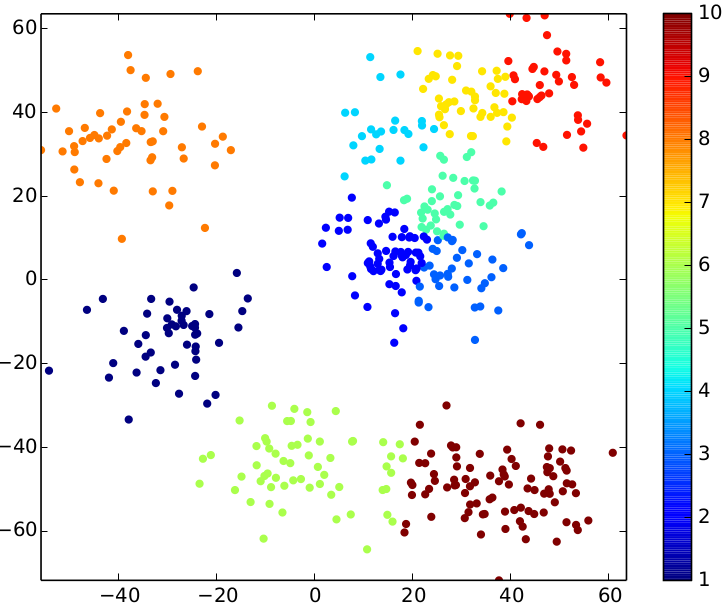

This guide will Peter demonstrate Stratosphere's features by example. You will see how you can leverage Stratosphere's Iteration-feature to find clusters in a dataset using K-Means clustering. On the way, you will see the compiler, the status interface and the result of the algorithm.
Generate Input Data
Stratosphere contains a data generator for K-Means.
# Download Stratosphere
wget
tar xzf stratosphere-*.tgz
cd stratosphere-*
mkdir kmeans
cd kmeans
# Run data generator
java -cp ../examples/stratosphere-java-examples-0.5.1-KMeans.jar eu.stratosphere.example.java.clustering.util.KMeansDataGenerator 500 10 0.08
cp /tmp/points .
cp /tmp/centers .
The generator has the following arguments:
KMeansDataGenerator <numberOfDataPoints> <numberOfClusterCenters> [<relative stddev>] [<centroid range>] [<seed>]
The relative standard deviation is an interesting tuning parameter: it determines the closeness of the points to the centers.
The kmeans/ directory should now contain two files: centers and points.
Review Input Data
Use the plotPoints.py tool to review the result of the data generator. Download Python Script
python2.7 plotPoints.py points points input
Note: You might have to install matplotlib (python-matplotlib package on Ubuntu) to use the Python script.
The following overview presents the impact of the different standard deviations on the input data.
| relative stddev = 0.03 | relative stddev = 0.08 | relative stddev = 0.15 |
|---|---|---|
 |
 |
 |
Run Clustering
We are using the generated input data to run the clustering using a Stratosphere job.
# go to the Stratosphere-root directory
cd stratosphere
# start Stratosphere (use ./bin/start-cluster.sh if you're on a cluster)
./bin/start-local.sh
# Start Stratosphere web client
./bin/start-webclient.sh
Review Stratosphere Compiler
The Stratosphere webclient allows to submit Stratosphere programs using a graphical user interface.
{kind=link}
2. Upload the file.
examples/stratosphere-java-examples-0.5-SNAPSHOT-KMeansIterative.jar4. Enter the arguments in the lower left box:
file://<pathToGenerated>points file://<pathToGenerated>centers file://<pathToGenerated>result 10file:///tmp/stratosphere/kmeans/points file:///tmp/stratosphere/kmeans/centers file:///tmp/stratosphere/kmeans/result 20{kind=link}
2. Inspect the operators and see the properties (input sizes, cost estimation) determined by the optimizer.
{kind=link}
2. Open Stratosphere's monitoring interface to see the job's progress.
3. Once the job has finished, you can analyize the runtime of the individual operators.
Analyze the Result
Use the Python Script again to visualize the result
python2.7 plotPoints.py result result result-pdf
The following three pictures show the results for the sample input above. Play around with the parameters (number of iterations, number of clusters) to see how they affect the result.
| relative stddev = 0.03 | relative stddev = 0.08 | relative stddev = 0.15 |
|---|---|---|
 |
 |  |
Apache Flink is an effort undergoing incubation at The Apache Software Foundation (ASF), sponsored by the Apache Incubator PMC. Incubation is required of all newly accepted projects until a further review indicates that the infrastructure, communications, and decision making process have stabilized in a manner consistent with other successful ASF projects. While incubation status is not necessarily a reflection of the completeness or stability of the code, it does indicate that the project has yet to be fully endorsed by the ASF.